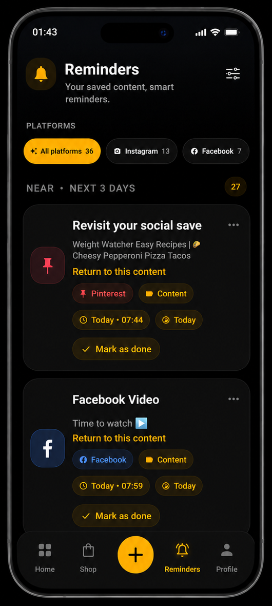
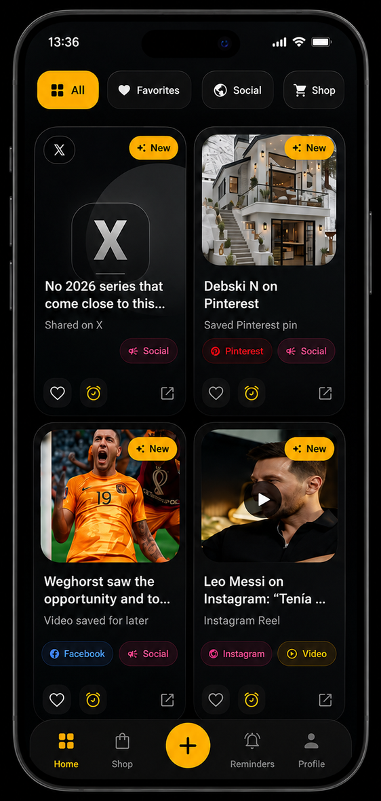
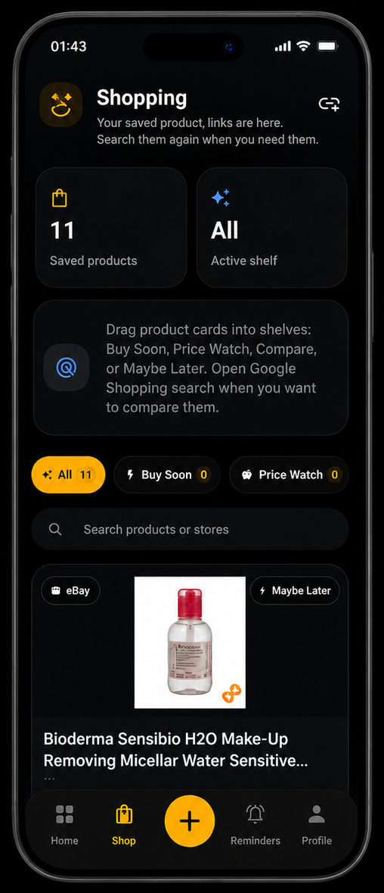
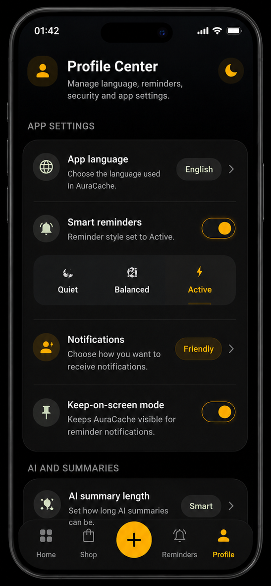
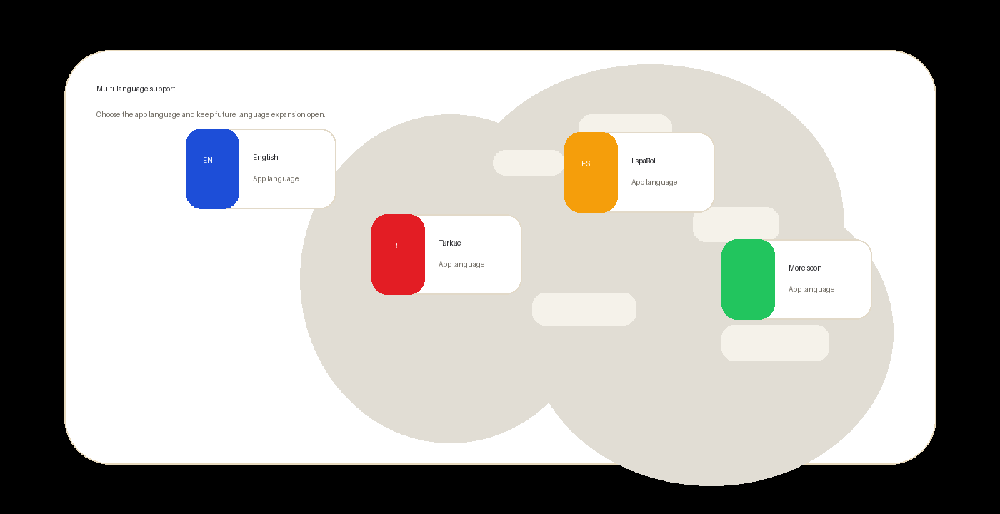

Save from anywhere
Collect links from browsers, social apps, marketplaces, videos, articles, recipes, and study pages.
Link organizer for everyday content
AuraCache keeps social posts, shopping products, study resources, articles, videos, movie and series pages, and other useful links in one organized place.
AuraCache does not host social posts, movies, or series. It helps you save and organize links to external content.

What AuraCache does
A calm place to save, categorize, remember, and revisit links without turning them into another messy bookmark folder.
Collect links from browsers, social apps, marketplaces, videos, articles, recipes, and study pages.
Use reminders so useful links return when they should be watched, read, compared, or completed.
Keep product links in a dedicated shopping area instead of mixing them with general content.
Core features work without AI. Optional supported API-key features can improve titles, metadata, and summaries.
App areas
Home, shopping, and profile controls keep your saved links organized by intent.

Visual saved links, folders, platforms, and recent saves.

Product links and shelves for comparing or buying later.

Language, reminders, notifications, privacy, and settings.
Multi-language support

Compatible devices
Why AuraCache
Save links with intent, keep shopping separate, add reminders, and return to content when it is still useful.
Contact AuraCacheSocial posts, shopping products, study resources, articles, videos, movie and series links, recipes, travel ideas, and other useful pages.
No. AuraCache does not host content. It organizes links to content found elsewhere.
No. Core saving, organization, shopping, and reminder features work without AI.